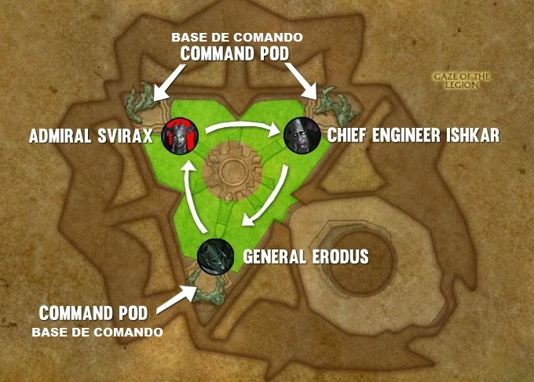
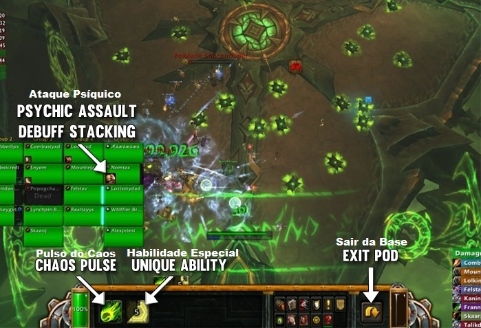

Antoran High Command
Resumo
-
Bosses que compartilham vida. Apenas um fica ativo para ser atacado de cada vez, enquanto os outros dois ficam em suas bases também atacando o grupo.

-
A luta tem 3 fases e que duram 90 segundos cada e mudam conforme a rotação dos bosses.
-
A base vazia deverá ser usada pelos players pois contem 2 habilidades que variam conforme o Boss e devem ser usadas para na luta.
- Uma Habilidade especial e uma habilidade compartilhada Pulso do Caos que causa dano e aumenta o dano recebido em 15%. Quem estiver na base deve usar essa habilidade frequentemente para manter o debuff de dano o máximo possível no boss.
- Ao ficar dentro da base o player recebera Ataque Psíquico dano de sombra progressivo a cada 2 segundos. O player pode ser curado de fora, mas o dano se tornará maior a cada tick, então deve ficar entre 35 a 40 seg. Ao completar 45 Seg será morto instantaneamente.
-
Assim que o player sair da base o player ira receber Cicatriz Psíquica impossibilitando entrar na base por três minutos.

-
Enquanto os bosses estiverem fora eles utilizam apenas Explorar Fraquezas causando dano físico em cone em 10 yards, aplicando um dano que aumenta em 75% o dano recebido.
-
Dois players aleatórios receberão um debuff decorrente da magia Pulso do Caos causando dano magico por três segundos e aplicam um debuff que aumenta o dano recebido por 15 Seg. O Debuff pode ser dispelado.
Todos
- Será setado dois players por fase para entrar na base, assim q o primeiro sair o segundo deve entrar imediatamente na base.
Tanks
- Tanks devem deixar o boss de costa para o grupo.
- Explorar Fraquezas deve ser trocado taunt a cada duas stacks.
Healers
- A cura deve ser focada no player dentro da base.
- Dispelar quando possível o debuff gerado por Pulso do Caos
Primeira Fase
- Almirante Svirax será o alvo nessa fase, sua base deverá ser utilizada.
-
Habilidade especial é Fogo Definhante ataca uma zona selecionável e detona alguns segundos depois, causando um dano alto e aplica um aumento de 25% de dano recebido em todos os adds atingidos, essa habilidade não funciona no Boss.
-
General Erodus e Chefe Enginner Ishkar estão nas bases. Sendo assim é necessário lidar com as seguintes habilidades:
-
Genaral Erodus irá sumomar adds quando castar Evocar Reforços.
-
Serão três adds, um Fanatical Pyromancer e dois Felblade Shocktoopers, eles irão aparecer perto do Boss ativo.
-
O Fanatical Pyromancer deve ser interrompido sempre que castar Ignimpacto, que causa grande dano a um player aleatório.

-
Os dois Felblade Shocktoopers devem ser tankados e irão dar charge em três targets e um deles receberá Tornado de Aço causando dano físico em 5 yards por 6 segundos. Dessa forma os 3 player deverão se afastar do grupo num mesmo local para que possam juntar os adds na hora do charge facilitando o cleave.

-
Chefe Enginner Ishkar ira selecionar 5 players aleatórios para castar Mina Entrópica na sala. Qualquer um que passar em cima das minas levara um dano moderado e aplicara um debuff em toda a raid. Não pode pisar nas minas.

DPS / Healer
- O player dentro da base deve usar Fogo Definhante nos adds.
- Caso seja marcado por Tornado de Aço se posicione com os outros marcados, antes q receba o charge.
- O dps deve ser focado no Fanatical Pyromancer.
- Evite pisar nas minas geradas por Mina Entrópica.
Segunda Fase
- Chefe Enginner Ishkar será o alvo nessa fase, sua base deverá ser utilizada.
-
Habilidade especial é Emissor de Escudo Vill cria um Emissor de Escudo Vill que é um objeto utilizável por qualquer player fora clicando nele, ao utilizar ele cria uma barreira que reduz em 50% o dano de fogo por 10 Seg em 12 Yards.

-
Essa barreira deve ser utilizada para mitigar o dano do Fuzilaria castado pela Almirante em sua base.

-
Almirante Svirax e General Erodus estão nas bases. Sendo assim é necessário lidar com as seguintes habilidades:
-
General Erodus contunuará usarEvocar Reforços, mas não haverá mais minas.
-
Almirante Svirax ira castar três vezes por fase Fuzilaria. Cada Fuzilaria concede uma aplicação de Mira, aumentando em 25% o dano das próximas Fuzilarias.
- Este dano é facilmente gerenciável no início, no entanto, a cada cast irá aumentar sendo necessário o uso da barreira.
- Essa habilidade atua como um enraivecimento do boss, pois a raid precisa derrotar os Bosses antes que esse dano de Fuzilaria se torne muito alto.
Todos
-
O player que estiver no controle da base deve usar Emissor de Escudo Vill para criar três Emissor de Escudo Vill próximo da base do Chief Ishkar e mais tres proximos a base do General Erodus.

-
Um player será setado para clicar no Emissor de Escudo Vill deve ficar atento ao buff que Almirante Svirax recebe.

Terceira Fase
- General Erodus será o alvo nessa fase, sua base deverá ser utilizada.
-
Habilidade especial é Evocar Módulo Disruptor. Usar essa habilidade irá interromper todos os Adds na área por 7 segundos e diminui sua velocidade. Isso não será muito necessário pois provavelmente os adds já estarão todos mortos. Mas essa habilidade também destrói todas as minas ao redor em 12 yards, sendo assim deve ser usada o máximo possível para limpar a sala.
-
Almirante Svirax continua usando Fuzilaria.
-
Chefe Enginner Ishkar continua usando Mina Entrópica.
-
Ao final de 90 Segundos nessa fase, será iniciado a primeira fase novamente e assim se repetirá até que o boss morra ou a wipe devido ao dano progressivo do Fuzilaria.